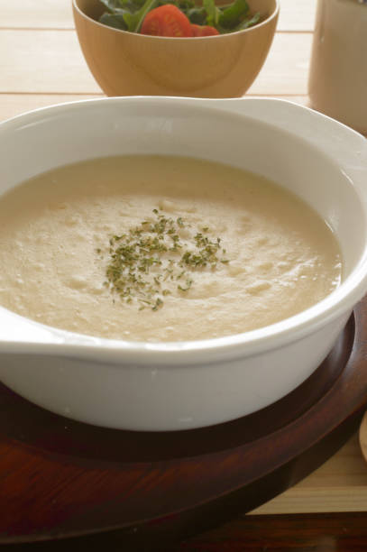

Cauliflower Potato Soup

Description
This delicious, filling soup is wonderful on a chilly fall evening.
Ingredients
- 1 head cauliflower, stemmed and chopped
- 2 large red potatoes, cut into 1-inch pieces
- 5 baby carrots, cut into 1/2 inch slices or to taste
- 2 teaspoons dried onion flakes or to taste
- 3 cups water or as needed
- 1 cube chicken bouillon
- 1 (10.5 ounce) can condensed cream of chicken soup
- 1/2 cup milk
- 1/2 package (8 ounce) package cream cheese
- 1 tablespoon bacon bits or to taste
- 1/4 cup chopped fresh parsley or to taste
- 1/2 cup shredded cheddar cheese
Directions
- Combine cauliflower, potatoes, carrot and onion flakes in a pot. Add enough water to cover,
then stir in bouillon cube. Bring to a simmer and cook until cauliflower is tender, about 10 minutes.
- Transfer vegetable mixture and about 1 cup cooking liquid to a slow cooker. Stir in condensed soup,
milk, cream cheese and bacon bits. Cook on low for 2 1/2 hours, stirring occasionally.
- Stir parsley into soup and continue cooking until vegetables are tender and flavors blend, 30
minutes to 1 1/2 hours.
- Ladle into bowls and top with shredded cheese.
Home